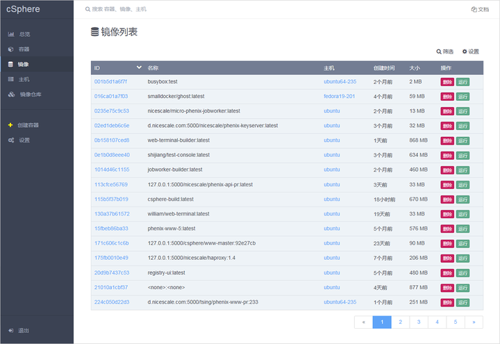

可视化的面板
- 提供整体概览
- 实时监控容器数量和状态
- 全局Docker主机和容器的健康信息展示
- 可详细查看某个容器的配置/健康/关联Docker主机等信息
Docker容器管理
- 集中监控所有的Docker容器
- Docker容器的分组/分类功能
- 清晰、直观的展现容器状态，如运行、僵尸、停止
- 可查看容器和Docker主机的依赖关系
- 容器的操作：启动、停止、暂停、恢复

Docker镜像管理
- 每台Docker主机上的镜像列表
- 快速查看镜像和容器的关系
- 对比相同服务的镜像版本是否一致
- 镜像的删除、push推送、tag命名操作
- 查看镜像的历史构建过程
Docker主机管理
- 管理Docker主机(物理机/虚拟机)容量
- 检测Docker主机是否超载
- Docker主机的CPU和内存信息及使用量
- 展示Docker主机中的容器和本地镜像
- Docker主机上的容器显示和操作: 启动、停止、暂停、删除
便捷的搜索
- 可搜索Docker主机、容器和镜像
- 可根据不同的字段过滤查找
- 定位僵尸容器
售后服务
服务QQ：41309397
服务邮箱：support@nicescale.com
服务电话：010-62249349